Introduction to Spatial data in R
Before you begin, this module expects students to have some basic knowledge of R and GIS.
Overview
This module will follow a similar structure to previous QGIS session, however, in these lessons, we aim to equip students with skills to manage, analyse and present spatial data using R software.
Objectives of tutorial
- Vector data
- Introduction to
spandsfpackages - Importing shapefiles into R (Spatial points and polygons)
- Joining data to shapefiles
- Writing shapefiles out in R
- Introduction to
- Raster data
- Introduction to the
terrapackage - Importing rasters into R
- Plotting, reprojecting and manipulating rasters in R
- Extracting data from rasters
- Writing rasters out in R
- Introduction to the
- Creating publication quality maps
- Using
ggplot2 - Using
tmap
- Using
- Resources for advanced interactive maps with leaflet
Vector data in R
Introduction to sp and sf packages
The sp package (spatial) provides classes and methods
for spatial (vector) data; the classes document where the spatial
location information resides, for 2D or 3D data. Utility functions are
provided, e.g. for plotting data as maps, spatial selection, as well as
methods for retrieving coordinates, for subsetting, print, summary,
etc.
The sf package (simple features = points, lines,
polygons and their respective ‘multi’ versions) is the new kid on the
block with further functions to work with simple features, a
standardized way to encode spatial vector data. It binds to the packages
‘GDAL’ for reading and writing data, to ‘GEOS’ for geometrical
operations, and to ‘PROJ’ for projection conversions and datum
transformations.
For the time being, it is best to know and use both the sp and the sf
packages, as discussed in this
post. However, we focus on the sf package. for the
following reasons:
- sf ensures fast reading and writing of data
- sf provides enhanced plotting performance
- sf objects can be treated as data frames in most operations
- sf functions can be combined using %>% operator and works well with the tidyverse collection of R packages.
- sf function names are relatively consistent and intuitive (all begin with st_) However, in some cases we need to transform sf objects to sp objects or vice versa. In that case, a simple transformation to the desired class is necessary:
To sp object <- as(object, Class = "Spatial")
To sf object_sf = st_as_sf(object_sp, "sf")
A word of advice: be flexible in the usage of sf and sp. Sometimes it
may be hard to explain why functions work for one data type and do not
for the other. But since transformation is quite easy, time is better
spend on analyzing your data than on wondering why operations do not
work. For the purpose of this material we will focus of teaching you the
package sf as it is intended to succeed and replace R
packages sp, rgeos and the vector parts ofrgdal packages. It also connects nicely to tidyverse learnt
in previous modules.
Importing spatial data into R (Spatial points and polygons)
To import data we would first need to start with loading the library
library(sf)
library(tidyverse)Shapefiles
Shapefiles can be called in to R using the functionst_read(). Similarly to read_csv() we include
a filepath to a shapefile. In this instance we would load the part of
the shapefile that ends with .shp
fakeland <- st_read("shapefiles/FAK_HDs.shp")## Reading layer `FAK_HDs' from data source
## `/builds/malaria-atlas-project/intro-to-spatial-analysis-for-infectious-diseases/shapefiles/FAK_HDs.shp'
## using driver `ESRI Shapefile'
## Simple feature collection with 46 features and 5 fields
## Geometry type: POLYGON
## Dimension: XY
## Bounding box: xmin: -1.137248 ymin: 7.081189 xmax: 4.912022 ymax: 10.37418
## Geodetic CRS: WGS 84You’ll notice that when you load the shapefile in, there will be a set of information explaining the features of the shapefile. The first sentence shows that you have loaded a ESRI shapefile, it contains 46 features (which are polygons in this case) and 5 columns of information stored as a data tabel. It mentions also there is a spatial extent (called bounding box) and the coordinate reference system (CRS).
you can also get this information when you simply call the sf object
fakeland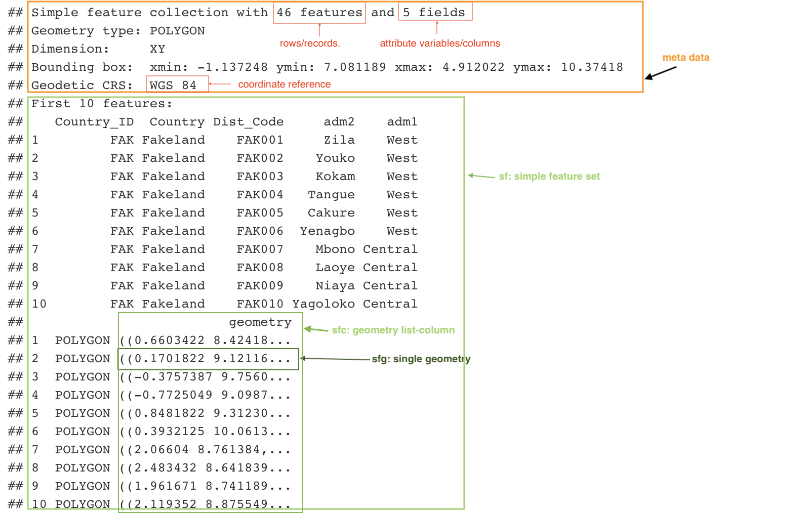
In this case it is important to read in and check the metadata for the type of spatial information you have loaded.
Spatial points
Another key type of spatial data is data linked to coordinates,
frequently found in a table format. We can read these data in using theread_csv() function, then we may want to convert these into
spatial information using the st_as_sf() function. Here we
have a csv file containing the coordinates for the locations of health
facilities in our routine data. Note that we set the projection for the
spatial object using the crs command; crs 4326 is the
standard WGS 84 CRS.
fakeland_hf_gps <- read_csv("data/fakeland_hf_gps.csv")## Rows: 100 Columns: 8
## ── Column specification ────────────────────────────────────────────────────────
## Delimiter: ","
## chr (5): Country_ID, Country, Dist_Code, adm1, adm2
## dbl (3): X, Y, hf
##
## ℹ Use `spec()` to retrieve the full column specification for this data.
## ℹ Specify the column types or set `show_col_types = FALSE` to quiet this message.# Make the gps data into a point simple feature
fakeland_hf_points <- st_as_sf(fakeland_hf_gps, coords = c("X", "Y"), crs = 4326)Shapefile projections
We learnt about the importance of Coordinate Reference Systems (CRS) for projecting spatial data in module 3. Using the sf package it is easy to view your data on different projects and switch between different projections.
We have already seen that you can identify the CRS when reading in a
shapefile using st_read and when viewing the features of a
shapefile. You can also see the CRS using the commandst_crs()
st_crs(fakeland)## Coordinate Reference System:
## User input: WGS 84
## wkt:
## GEOGCRS["WGS 84",
## DATUM["World Geodetic System 1984",
## ELLIPSOID["WGS 84",6378137,298.257223563,
## LENGTHUNIT["metre",1]]],
## PRIMEM["Greenwich",0,
## ANGLEUNIT["degree",0.0174532925199433]],
## CS[ellipsoidal,2],
## AXIS["latitude",north,
## ORDER[1],
## ANGLEUNIT["degree",0.0174532925199433]],
## AXIS["longitude",east,
## ORDER[2],
## ANGLEUNIT["degree",0.0174532925199433]],
## ID["EPSG",4326]]We can then change the projection using the commandst_transform(). We can also combine the two commands to
change the projection of one data type to be that of the other.
# Change the projection to UTM zone 17N
fakeland_utm <- st_transform(fakeland, 26717)
ggplot(fakeland_utm)+
geom_sf()+
theme_bw()
# Change the projection of the fakeland_utm shapefile to match that of the original fakeland
fakeland2 <- st_transform(fakeland_utm, st_crs(fakeland))
ggplot(fakeland2)+
geom_sf()+
theme_bw()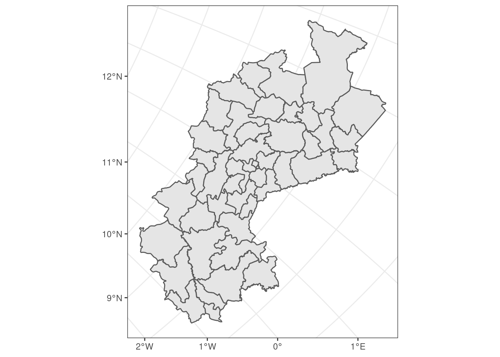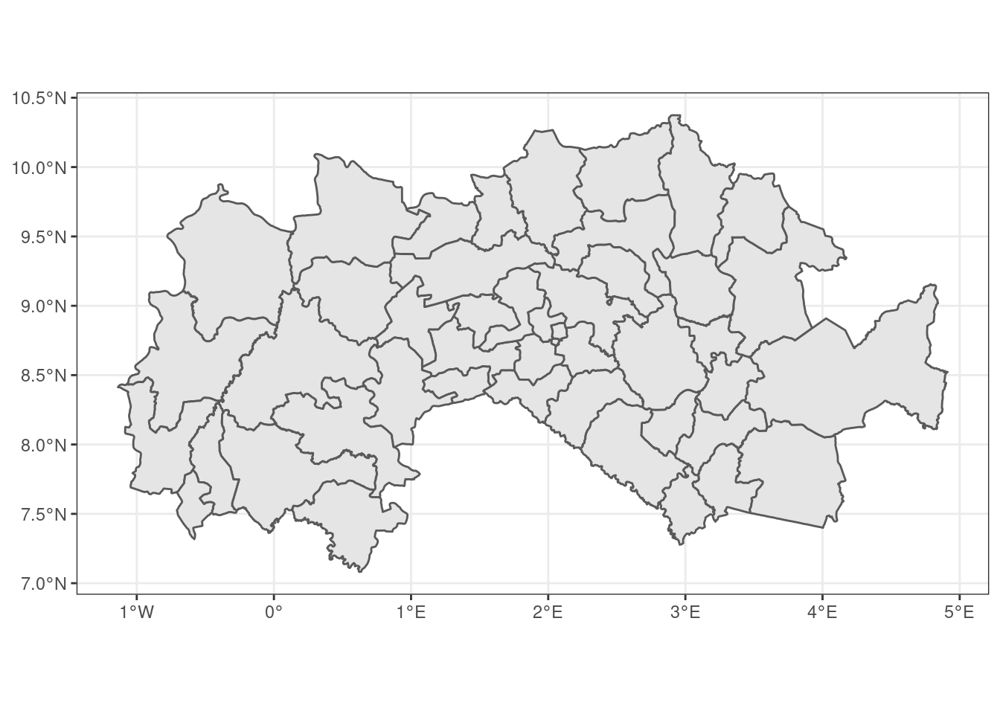
Joining data to shapefiles
We often want to join data to shapefiles to enable the creation of
maps and to analyse spatial data. You can use the join functions shown
in module 2 to join sf data to tables. Just note that the sf data must
go first to automatically be recognised as sf. Else you would need to
reset it using st_as_sf()
annual_data <- read_csv("data/annual_admin_data.csv")## Rows: 46 Columns: 20
## ── Column specification ────────────────────────────────────────────────────────
## Delimiter: ","
## chr (2): adm1, adm2
## dbl (18): test, test_u5, test_ov5, test_rdt, test_rdt_u5, test_rdt_ov5, test...
##
## ℹ Use `spec()` to retrieve the full column specification for this data.
## ℹ Specify the column types or set `show_col_types = FALSE` to quiet this message.annual_data_sf <- fakeland %>%
left_join(annual_data, by = c("adm2", "adm1")) Writing shapefiles out in R
st_write can be used in the same way aswrite_csv to save shapefiles.
st_write(annual_data_sf, "outputs/annual_admin_routine_data.shp")Task 1
- Load in the shapefile called “fakeland_task”
- How many polygons are in the shapefile?
- What projection is this shapefile in?
- Change the projection to be in WGS 84
Solution
fakeland <- st_read("shapefiles/fakeland_task.shp") fakeland st_crs(fakeland) fakeland <- st_transform(fakeland, 4326)
Raster data
Raster data has historically been dealt with in R primarily using theraster package, however, this is being discontinued as
replaced by the terra package. We can start by loading the
package in R.
library(terra)## terra 1.6.17##
## Attaching package: 'terra'## The following object is masked from 'package:patchwork':
##
## area## The following object is masked from 'package:knitr':
##
## spin## The following object is masked from 'package:tidyr':
##
## extractIn terra we deal with rasters as a class of data called “SpatRaster”. This is a multi-layered feature which stores the parameters to describe the raster, including then number or rows and columns, the spatial extent and projection.
Loading raster data
We can import raster data using the function rast(), and
look at the raster properties by calling the object.
population <- rast("rasters/ihme_corrected_worldpop_All_Ages_3_2018.tif")
population## class : SpatRaster
## dimensions : 84, 156, 1 (nrow, ncol, nlyr)
## resolution : 0.04166667, 0.04166667 (x, y)
## extent : -1.5, 5, 7, 10.5 (xmin, xmax, ymin, ymax)
## coord. ref. : lon/lat WGS 84 (EPSG:4326)
## source : ihme_corrected_worldpop_All_Ages_3_2018.tif
## name : ihme_corrected_worldpop_All_Ages_3_2018
## min value : 6.848159e-01
## max value : 3.008912e+05We can view the raster simply by using the plot()
function.
plot(population)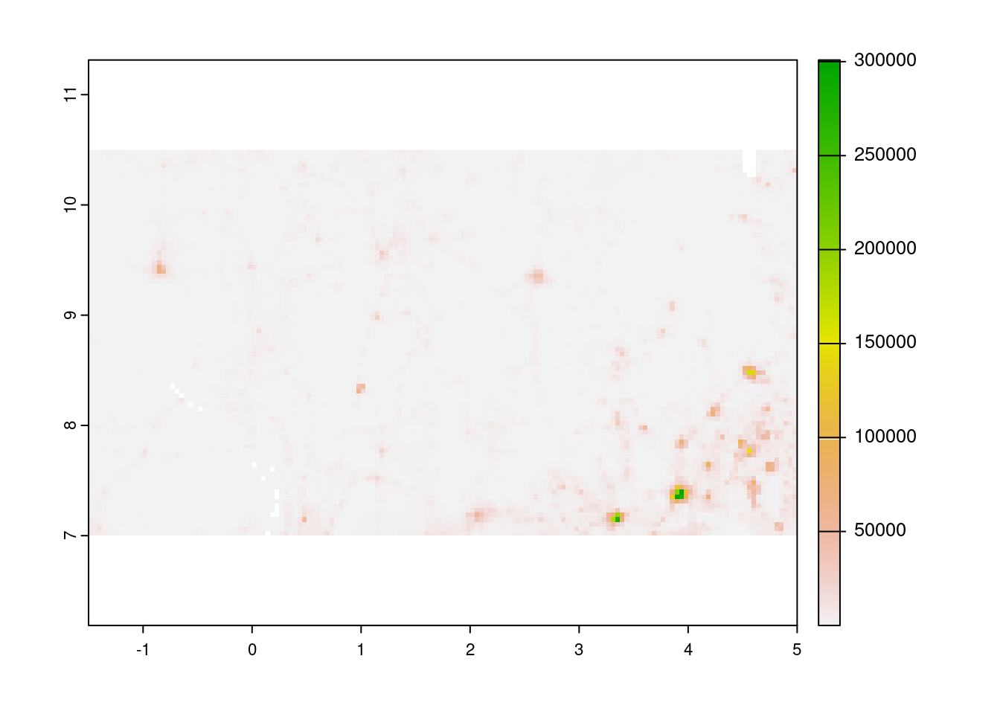
We can also use this function to read in a stack of multiple rasters.
In the raster folder you will find a series of rasters with the prefix
“GPMM”, these are the monthly rainfall at a 5km resolution for Fakeland.
We can identify these rasters using the regular expression and read them
in as a raster stack using rast().
file.names <- list.files(path = 'rasters/', pattern = '^GPMM.*?\\.tif$', full.names = T)
GPMM <- rast(file.names)
plot(GPMM)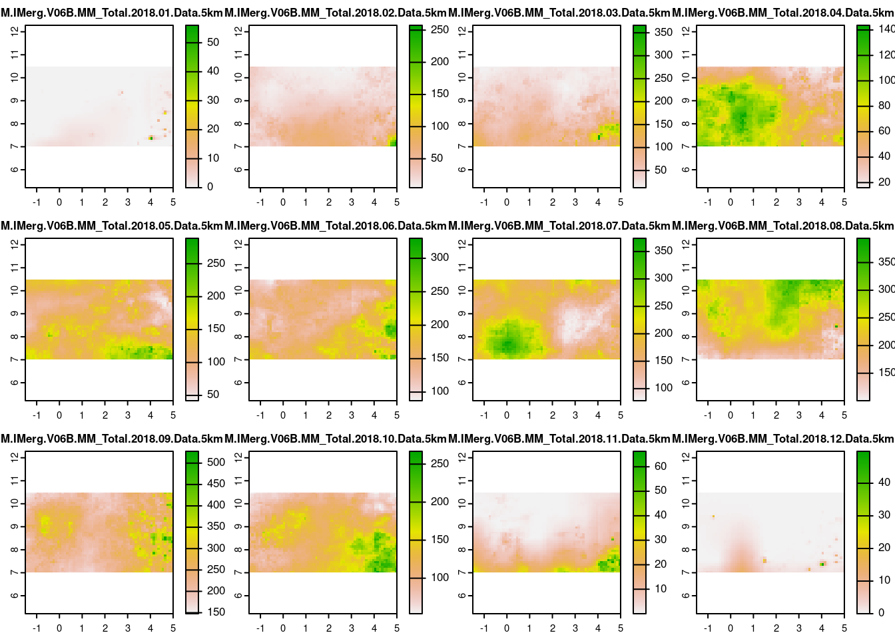 Lets rename the rasters in the stack to make the names more meaningful. We can also use the index number to extract a single layer. We can select one raster in the stack by using the numerical index. So this would give us the monthly rainfall raster for June.
names(GPMM) <- c('GPMM_Jan', 'GPMM_Feb', 'GPMM_Mar', 'GPMM_Apr', 'GPMM_May', 'GPMM_Jun',
'GPMM_Jul', 'GPMM_Aug', 'GPMM_Sep', 'GPMM_Oct', 'GPMM_Nov', 'GPMM_Dec')
plot(GPMM[[6]])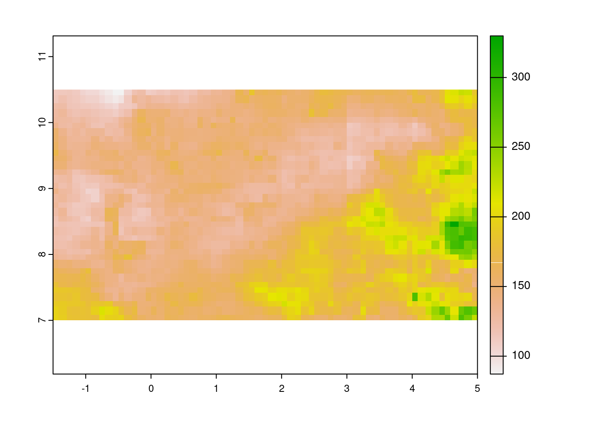
Plotting, reprojecting and manipulating Rasters in R
Plotting rasters
We can quickly summarise the data from rasters in plots such as histograms.
hist(log(population)) #plotting the log of the population due to the scale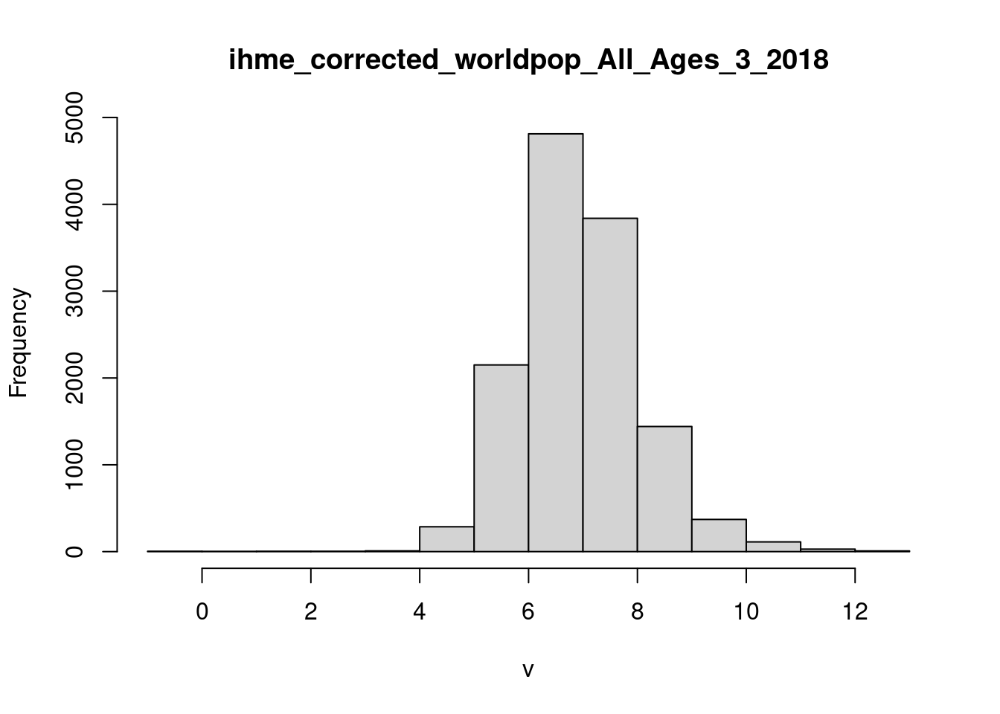
Additionally we can also use ggplot to visualise
rasters, giving us more control over the appearance of the plot. First
you need to convert the raster to a data frame, then it can be plotted
using geom_raster. We can then use the same functions to
control the appearance of the plot discussed in the data visualisation
module.
pop_df <- as.data.frame(population, xy = TRUE)
ggplot()+
geom_raster(data = pop_df, aes(x = x, y = y, fill = ihme_corrected_worldpop_All_Ages_3_2018 ))+
scale_fill_viridis_c()+
labs(fill = "Population")+
theme_bw()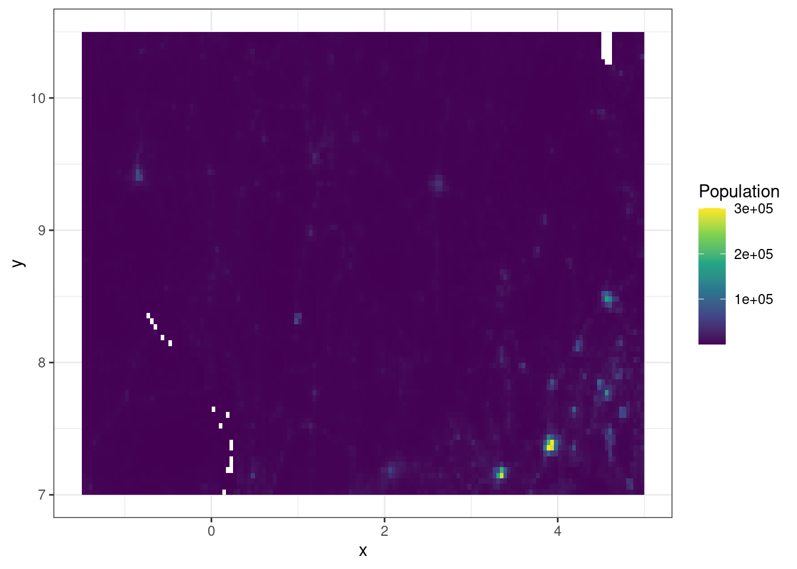
Reprojecting rasters
As with the shapefiles it is important to know and control the
projection of the raster. We can find out what the current projection is
and change it using the crs() function. This will allow us
to work with rasters and other spatial data.
crs(population)## [1] "GEOGCRS[\"WGS 84\",\n DATUM[\"World Geodetic System 1984\",\n ELLIPSOID[\"WGS 84\",6378137,298.257223563,\n LENGTHUNIT[\"metre\",1]]],\n PRIMEM[\"Greenwich\",0,\n ANGLEUNIT[\"degree\",0.0174532925199433]],\n CS[ellipsoidal,2],\n AXIS[\"geodetic latitude (Lat)\",north,\n ORDER[1],\n ANGLEUNIT[\"degree\",0.0174532925199433]],\n AXIS[\"geodetic longitude (Lon)\",east,\n ORDER[2],\n ANGLEUNIT[\"degree\",0.0174532925199433]],\n ID[\"EPSG\",4326]]"crs(population) <- "+proj=utm +zone=48 +datum=WGS84"Manipulating rasters
We can find out the spatial extent of a raster by using theext() function, and easily crop the raster to other extents
using crop(). We can specify the coordinates we wish to
crop the raster to, or a take the extent from a spatial object and crop
the raster to that.
ext(population)## SpatExtent : -1.5, 5, 7, 10.5 (xmin, xmax, ymin, ymax)pop1 <- crop(population, c(-1,2,9,10)) # c(xmin, xmax, ymin, ymax)
plot(pop1)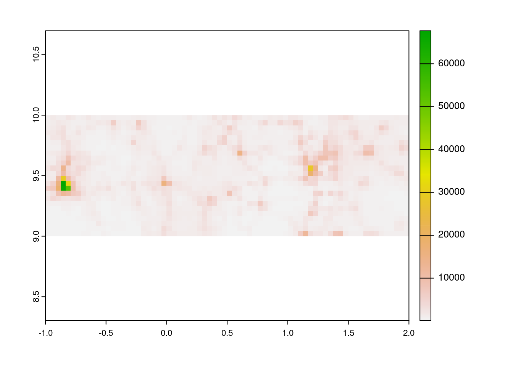
# Get the extend of the "West" region of fakeland
e <- filter(fakeland, adm1 == 'West') %>%
vect() %>%
ext()
# Crop the raster to the same extent
West_pop <- crop(population, e)
ext(West_pop)## SpatExtent : -1.125, 1.125, 7.08333333333333, 10.0833333333333 (xmin, xmax, ymin, ymax)We may then want to change all the raster cells which lay outside the
polygon for the West region to be NA. This can be done usingmask().
library(terra)
m <- filter(fakeland, adm1 == 'West') %>%
vect()
crs(West_pop) -> crs(m) # make sure projections are the same!
West_pop2 <- terra::mask(West_pop, m)
plot(West_pop2)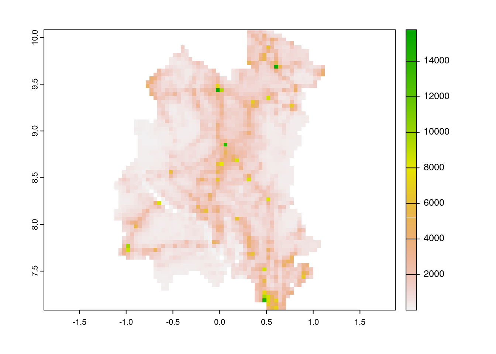
Extracting raster data
We frequently want to extract values from rasters. This could be
extracting all values within a polygon of a shapefile to perform
calculations on (such as summing the population in each district), or
extracting values for specific coordinates. This can be done using theextract() function. This can extract data from locations
stored as a spatial vector (SpatVector - points, polygons or lines), a
matrix with coordinates (x,y) or a vector of cell numbers.
Firstly, if we wanted to extract the population values for the first 5 cells in the raster we could use this command:
terra::extract(population, c(1,2,3,4,5))## ihme_corrected_worldpop_All_Ages_3_2018
## 1 203.1444
## 2 505.9554
## 3 855.8597
## 4 1277.4124
## 5 1942.9839Next, if we had a specific set of coordinates we wanted to know the
population at, we would define these coordinates in a matrix with the
longitude (x) as the first value, and the latitude (y) as the second
value (N.B They must be in this order) then use theextract() function.
coords <- cbind(1, 8)
extract(population, coords) # Extract the population for these coordinates## ihme_corrected_worldpop_All_Ages_3_2018
## 1 1186.163If we had a vector of spatial vector of coordinates, such as our
dataset of health facility locations, we can pass this to theextract() function to get the raster values for each point.
This function additionally works on raster stacks. If we run this on our
stack of monthly rainfall rasters we can see that the values are
extracted for each set of coordinates from each monthly raster. These
can then be processed as a normal data frame
GPMM_extract <- extract(GPMM, vect(fakeland_hf_points))
head(GPMM_extract)## ID GPMM_Jan GPMM_Feb GPMM_Mar GPMM_Apr GPMM_May GPMM_Jun GPMM_Jul
## 1 1 0.140751183 51.77404 66.19682 81.09777 147.76413 134.0340 302.64267
## 2 2 0.007372544 50.04529 60.83176 88.40833 129.95383 140.5897 289.12778
## 3 3 0.004494285 42.21128 61.98917 90.62826 133.26007 142.3357 271.26285
## 4 4 1.027425170 54.43633 38.86056 67.79018 111.49038 186.1210 108.48865
## 5 5 0.951637805 48.27084 68.90779 93.04726 120.39143 161.5795 160.36346
## 6 6 0.524218440 36.64803 66.77352 65.90304 97.89902 185.6424 97.19148
## GPMM_Aug GPMM_Sep GPMM_Oct GPMM_Nov GPMM_Dec
## 1 177.9095 229.0716 90.79294 11.788742 0.86349326
## 2 176.3797 225.8389 86.13807 11.834579 0.17535123
## 3 174.8476 237.6628 102.00393 11.467198 0.22886179
## 4 264.4977 249.9303 127.60249 6.701365 0.15531778
## 5 256.3834 232.9854 128.41360 5.979004 0.07403241
## 6 213.7514 269.6235 184.14915 8.359339 0.12935738Finally, we look at extracting the population values for each admin 2
district of fakeland. For this we provide extract() with
the raster and the shapefile. The output is then the population value
for each cell of the raster, linked to each polygon ID of the shapefile.
We can the perform summary statistic on this as we would a standard data
frame.
fakeland_pop <- extract(population, vect(fakeland))
head(fakeland)## Simple feature collection with 6 features and 5 fields
## Geometry type: POLYGON
## Dimension: XY
## Bounding box: xmin: -1.070175 ymin: 7.614849 xmax: 1.138602 ymax: 10.09391
## Geodetic CRS: WGS 84
## Country_ID Country Dist_Code adm2 adm1 geometry
## 1 FAK Fakeland FAK001 Zila West POLYGON ((0.6603422 8.42418...
## 2 FAK Fakeland FAK002 Youko West POLYGON ((0.1701822 9.12116...
## 3 FAK Fakeland FAK003 Kokam West POLYGON ((-0.3757387 9.7560...
## 4 FAK Fakeland FAK004 Tangue West POLYGON ((-0.7725049 9.0987...
## 5 FAK Fakeland FAK005 Cakure West POLYGON ((0.8481822 9.31230...
## 6 FAK Fakeland FAK006 Yenagbo West POLYGON ((0.3932125 10.0613...fakeland_pop <- fakeland_pop %>%
group_by(ID) %>%
summarise(population = sum(ihme_corrected_worldpop_All_Ages_3_2018, na.rm = T)) %>%
mutate(adm2 = fakeland$adm2)Writing rasters out in R
We can save a rasters in a variety of formats usingwriteRaster. Here was dave it as a “.tif”
writeRaster(West_pop, "rasters/West_adm1_population.tif")Task 2
- Using the “fakelands_task” shapefile from task 1, ensure the projection is in “4326” (WGS84)
- Import the raster of rainfall for April “GPMM.IMerg.V06B.MM_Total.2018.04.Data.5km”
- Extract the vaules from the raster based on the polygons in your shapefile
- Calculate the mean rainfall for each polygon in the shapefile
Solution
fakeland <- st_read("shapefiles/fakeland_task.shp") fakeland <- st_transform(fakeland, 4326) GPMM_Apr <- rast("rasters/GPMM.IMerg.V06B.MM_Total.2018.04.Data.5km.tif") names(GPMM_Apr) <- 'GPMM_Apr' fakeland_rain <- extract(GPMM_Apr, fakeland) %>% group_by(ID) %>% summarise(mean_rainfall = mean(GPMM_Apr, na.rm = T)) %>% mutate(adm1 = fakeland$adm1)
Demo 1
In this demo we will join together what we have learnt, importing the shapefile and population raster for Fakeland, calculating the total population. We will join our annually aggregated routine data with the population and calculated the annual parasite incidence then join this on to the shapefile,
rm(list = ls()) # clear the console
# Import the data sources
annual_data <- read_csv('data/annual_admin_data.csv')
fakeland <- st_read('shapefiles/FAK_HDs.shp')
population <- rast('rasters/ihme_corrected_worldpop_All_Ages_3_2018.tif')
# Extract the population for each district
fakeland_pop <-
extract(population, vect(fakeland)) %>%
group_by(ID) %>%
summarise(population = sum(ihme_corrected_worldpop_All_Ages_3_2018, na.rm = T)) %>%
mutate(adm2 = fakeland$adm2)
# Join onto the routine data and calculate incidence
annual_data <-
left_join(annual_data, fakeland_pop) %>%
mutate(API = conf/population*100000) %>%
dplyr::select(adm1, adm2, API)
#Join the routine data onto the shapefile
fakeland_annual <-
left_join(fakeland, annual_data) Making chloropleth maps in R
In the demo we have created a dataset with annual incidence at admin 2 level. The next obvious thing to do is have a look at it. In this section we’ll explore some popular ways of making chloropleth maps in R. Although not designed as a full-scale GIS application, R (especially when combined with its vast ecosystem of packages) provides a powerful, endlessly customisable, tool for spatial visualisation.
Plotting spatial data using base R
It’s possible to produce maps using nothing more thanrgdal. Simply calling plot does the job, but
plots out all attributes of our shapefile in quite an unappealing way.
You can select out one attribute to plot using the normal R way of
subsetting: sf_object[name_of_attribute]. This way we can
very quickly plot out the API in Fakeland, as joined to the shapefile
above, by admin2 unit:
library(rgdal)
plot(fakeland_annual["API"])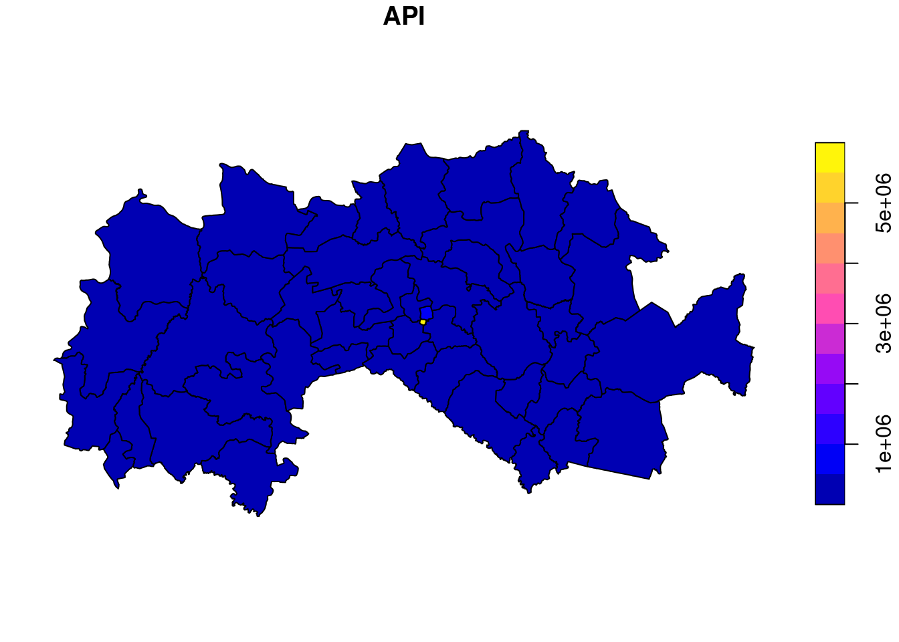
By default R will place the legend wherever it thinks ‘best’, but you
can specify location with the additional argument key.pos
(1 for below; 2 left; 3 above and 4 to the right).key.width and key.length allow you to control
the dimensions of the legend.
plot(fakeland_annual["API"], key.pos = 1)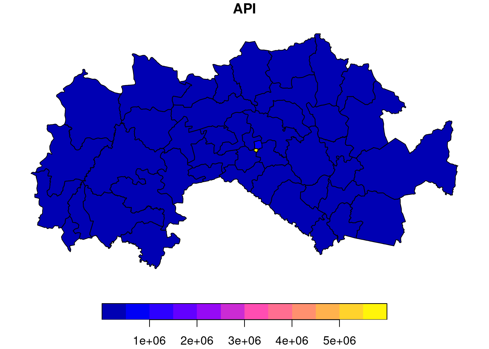
Notice that by default the colour ramp is discrete. You can tune the
colour breaks using either or both of breaks andnbreaks. nbreaks defines the number of breaks,breaks is either
- a vector of numbers defining the precise location of the breaks
- a string specifying the method to use to define the breaks – by
default R uses
pretty, but other options includeequal,jenksandquantile.
Titles can be specified using main, axes (with
lat-longs) toggled on/off using axes. We can use a log-10
scale using logz (if using this careful with your breaks!).pal is a palette function, detemining the colour ramp. The
default colour ramp is a bit 1980s for our purposes – let’s try Viridis
instead.
# define the palette
test_pal <- viridis::viridis(10)
plot(fakeland_annual["API"],
key.pos = 1,
pal = test_pal,
breaks = 'quantile',
main = "API, Fakeland 20XX",
axes = F,
logz = T)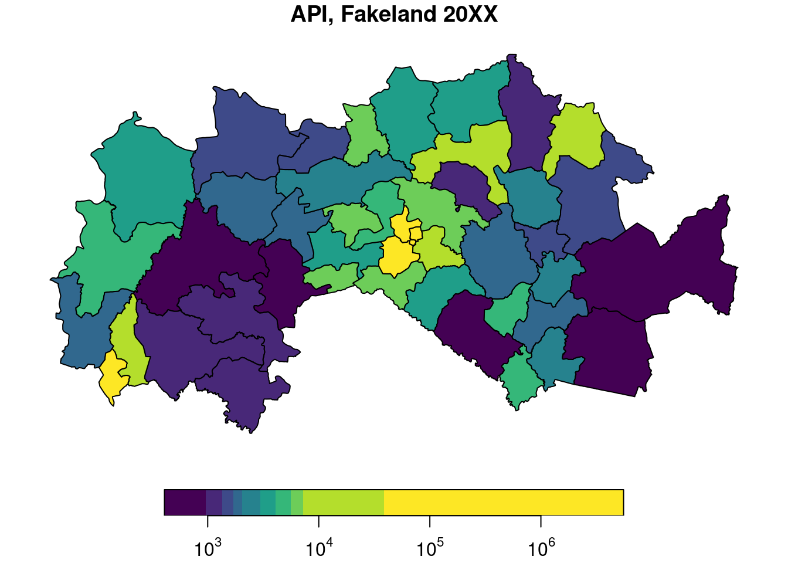
Plotting shapefiles using `ggplot2``
The above is a perfectly servicable map. In practice, however, the
flexibility of ggplot2 is worth the install and the
learning curve. You met ggplot2 earlier today – recall that
the package implements ‘the grammar of graphics’ to build plots in
layers. This philosophy is powerful, allowing us a much greater degree
of freedom in our map-making than we could achieve in base R.
Adding features to maps
Recall from earlier the typical ggplot call:ggplot(data, aesthetic). When making chloropleth maps, our
data will typically be an sf object, with a column
corresponding to the variable you wish to map, and a geometry column
describing the geography of the data.
Given an sf object, you can use geom_sf to
produce a simple plot of your shapefile without even explicitly defining
any aesthetics.
ggplot(fakeland) +
geom_sf() + # as we've called ggplot using an sf object as the data argument, geom_sf can figure it out itself
coord_sf() # deals with map projection 
geom_sf is a bit different to the ggplot2
geometries you met earlier: it requires a new aesthetic,geometry. The good news is you often don’t need to worry
about specifying this, as ggplot tries to help behind the
scenes:
- If you supply no
geometryargument to yourgeom_sfcall, R will try to find a column in your provided data called ‘geometry’, and use that if it’s suitable; - If you used an
sfobject in the function call (i.e.geom_sf(data = sf_object,..)) then ggplot can automatically detecte the geometry column (it doesn’t even need to be called geometry!) - You can specify it manually,
aes(geometry = geometry_column). If you have multiple geometry columns you’ll need to do this, as R can’t read your mind.
Let’s see how we can use ggplot2 to map the API in each
admin2 unit of Fakeland. To show the full range of variation on the map,
we’ll log-transform the colour-scale. Let’s decide on some breaks:
my_breaks <- c(signif(min(fakeland_annual$API)-1, 2), 8000, 160000, signif(max(fakeland_annual$API)+1, 2))ggplot() +
geom_sf(data = fakeland_annual, aes(fill = API), colour = "grey25") + # now we need to tell ggplot an antribute of the data to use as an aesthetic
scale_fill_viridis_c(trans = "log", breaks = my_breaks) +
labs(title = "API, Fakeland 20XX", fill = "") +
coord_sf() + # deals with map projection
guides() +
theme_void() +
theme(plot.title = element_text(face = "bold", hjust = 0.5),
legend.position = "bottom", legend.key.width = unit(2,"cm"), legend.text=element_text(size=12)) 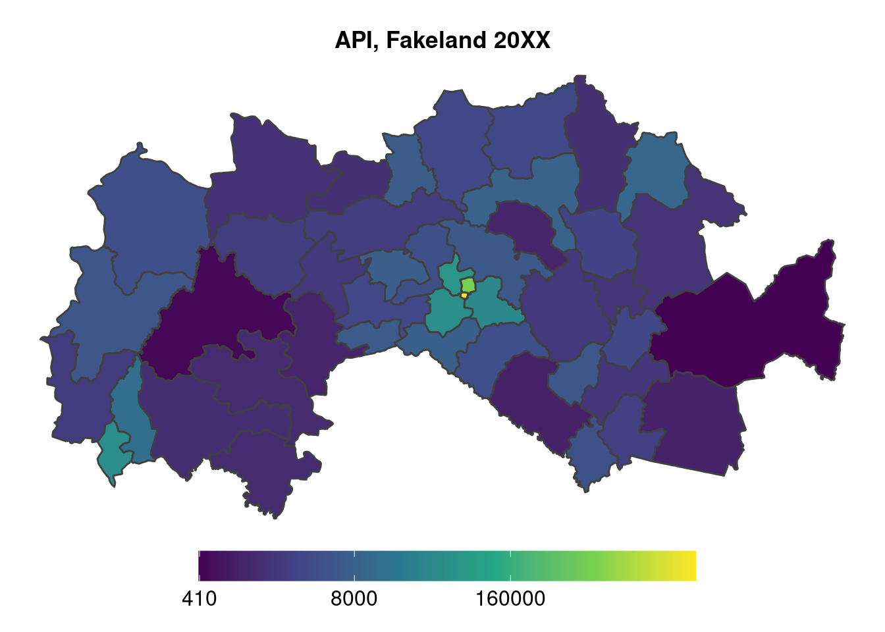
Compare this to the base R map we made – our colour scale is now continuous, but otherwise the plots are almost identical.
Breaking down the code we used to produce it:
ggplot() + geom_sf(data = fakeland_annual, aes(fill = API), colour = "grey25") +
After calling ggplot(), our first layer is a call togeom_sf pointing to our sf object. We’re
making a univariate map, so our aesthetics consists only of a single
call to fill the polygons with the entries infakeland_annual$API – no need for a geometry
call, here. colour determines the colour of the polygon
outlines – we’re not varying that based on data, so it sits outsideaes.
scale_fill_viridis_c() +
This next layer tells R to using a continuous viridis palette when
filling our polygons. When filling with discrete (factor) data, you
instead use scale_fill_viridis_d() here. The Viridis family
of colourramps are designed to . Arguments you can pass to this function
include alpha, to change transparency; begin
and end to truncate the palette; direction to
reverse it; and option to pick another palette in the
viridis family. Four options are available: “magma” (or “A”), “inferno”
(or “B”), “plasma” (or “C”), “viridis” (or “D”, the default option used
here) and “cividis” (or “E”). By default NAs will be shown
in grey – change this by setting na.value to the colour of
your choice.
labs(title = "API, Fakeland 20XX", fill = "") +
It’s rare that our short variable names are explanatory enough to
show on a plot. labs allows us to define exactly what we
want displayed, and define the plot title, subtitle, and even a caption
(e.g. for attribution). Labels of aesthetics are set by referring back
to that aesthetic: fill, colour,alpha, etc..
coord_sf() + # deals with map projection
The projection and extent of our map are controlled by this function.
In this case, it’s not doing anything – we could happily have omitted it
from our ggplot call. This is because by defaultggplot2 will use the CRS of the first layer which defines
one – here fakeland_annual. This can be overridden using acrs argument, which accepts any valid PROJ4 string.
coord_sf is also used to change the extent of our map –
by default the whole shapefile is shown, but providing xlim
and ylim arguements can zoom in on areas of interest.
guides() +
This slightly counter-intuitively named function sets the legend type for each aesthetic – colourbar, legend, or none. When you have multiple legends, guides can be used to reorder them, or even omit some altogether.
theme_void() +
Themes control the overall appearance of the plot.theme_void is an empty theme, giving us this floating
map.
theme(plot.title = element_text(face = "bold", hjust = 0.5), legend.position = "bottom", legend.key.width = unit(2,"cm"), legend.text=element_text(size=12))
Our final line makes alterations to our chosen theme – we’ve edited the typeface of the plot title and positioned it in the middle of the figure; moved the legend to the bottom and made it wider, and finally increased the font size of the legend ticks. These small touches make a big difference in the readability and visual appeal of our map.
Publication-quality maps in R
With ggplot2 we can go much further than simply
recreating base R’s plots. The layered nature of graphical grammar makes
it easy to add additional features to our maps (points, annotations,
etc). We can also exploit it to add base layers and logos, ultimately
creating maps which rival any GIS software’s output.
Adding points to maps
Suppose we want to add the locations of health facilities in Fakeland
to our map of API. fakeland_hf_points is an sf
object, but this time consisting of points. That doesn’t matter togeom_sf.
fakeland_hf_gps <- read_csv("data/fakeland_hf_gps.csv")
# Make the gps data into a point simple feature
fakeland_hf_points <- st_as_sf(fakeland_hf_gps, coords = c("X", "Y"), crs = 4326)
# Assign some of these points to be hospitals
fakeland_hospitals <- sample(fakeland_hf_points$hf, 0.1*length(fakeland_hf_points$hf))
fakeland_hf_points <- fakeland_hf_points %>%
mutate(hf_type = if_else(hf %in% fakeland_hospitals, "Hospital", "Clinic"))ggplot() +
geom_sf(data = fakeland_annual, aes(fill = API), colour = "grey50", size = 0.2) + # now we need to tell ggplot an antribute of the data to use as an aesthetic
scico::scale_fill_scico(palette = "batlow", trans = "log", breaks = my_breaks) +
geom_sf(data = fakeland_hf_points, aes(shape = hf_type), size = 2, colour = "grey20") +
labs(title = "API, Fakeland 20XX", fill = "API ",
shape = "Health Facility") +
coord_sf() + # deals with map projection
guides() +
theme_void() +
theme(plot.title = element_text(face = "bold", hjust = 0.5),
legend.position = "right", legend.key.width = unit(0.5,"cm"),
legend.key.height = unit(0.75,"cm"), legend.text=element_text(size=12)) 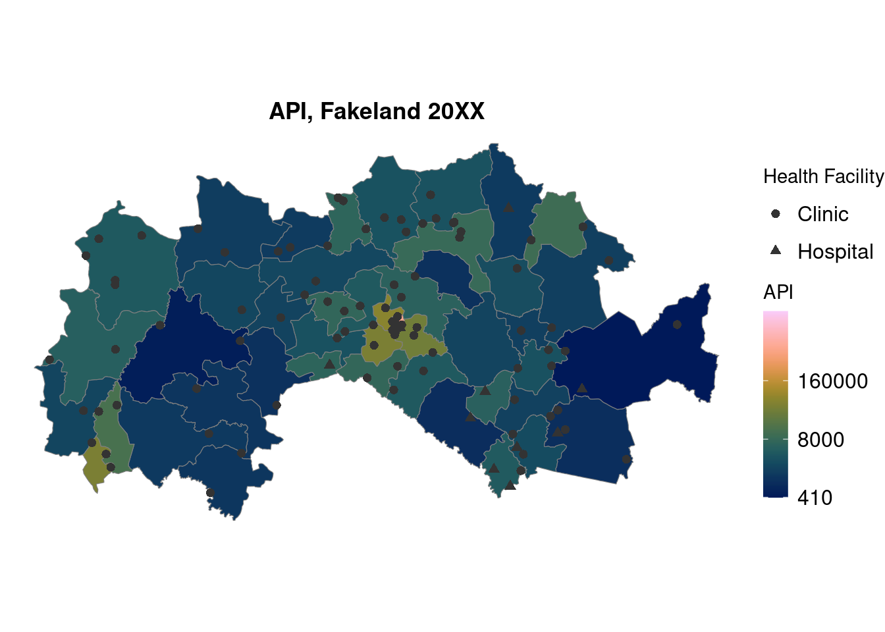
Try moving the geom_sf(data = fakeland_hf_points...)
call to above the geom_sf(data = fakeland_annual...) call:
does the map still look how you wanted it to?
To make the health-facility locations easier to see when superimposed
on our map, we’ve switched away from viridis to a palette from thescico package. Like viridis, all 17 palettes from scico are
perceptually uniform and colourblind safe.
Basemaps, compasses, and other finishing touches
For publications we often want to show some more contextual informaiton on our maps, rather than having Fakeland float in white-space. The grammar of graphics makes this easy – we can add ‘zoomed-out’ geographic information as a “base” layer, then layer our designed information on top.
Currently we only have a shapefile for Fakeland’s health districts. Let’s load in a regional Admin0 shapefile:
admin0_regional <- st_read("shapefiles/regional/fakeland_admin0_region.shp")## Reading layer `fakeland_admin0_region' from data source
## `/builds/malaria-atlas-project/intro-to-spatial-analysis-for-infectious-diseases/shapefiles/regional/fakeland_admin0_region.shp'
## using driver `ESRI Shapefile'
## Simple feature collection with 6 features and 2 fields
## Geometry type: POLYGON
## Dimension: XY
## Bounding box: xmin: -4 ymin: 7.05596 xmax: 8 ymax: 14
## Geodetic CRS: WGS 84If we make a quick plot of this, we can see this shapefile shows the
countries surrounding Fakeland. To check out the names of these
countries, let’s try using a geom_label layer. To add the
labels in the right positions, we’ll need to tell R the x and y
co-ordinates of the centroids – luckily this is easy to do usingst_centroid. Rememeber that st_centroid
assumes planar projection, rather than lat-lons. We can safely ignore
the warning here, as we’re just plotting for explanatory purposes, but
be careful!
country_central_points<- st_centroid(admin0_regional)## Warning in st_centroid.sf(admin0_regional): st_centroid assumes attributes are
## constant over geometries of xcountry_central_points <- cbind(admin0_regional, st_coordinates(st_centroid(admin0_regional$geometry)))
ggplot(admin0_regional) +
geom_sf() +
geom_text(data = country_central_points, aes(x = X, y = Y, label = cntry_n)) +
theme_void()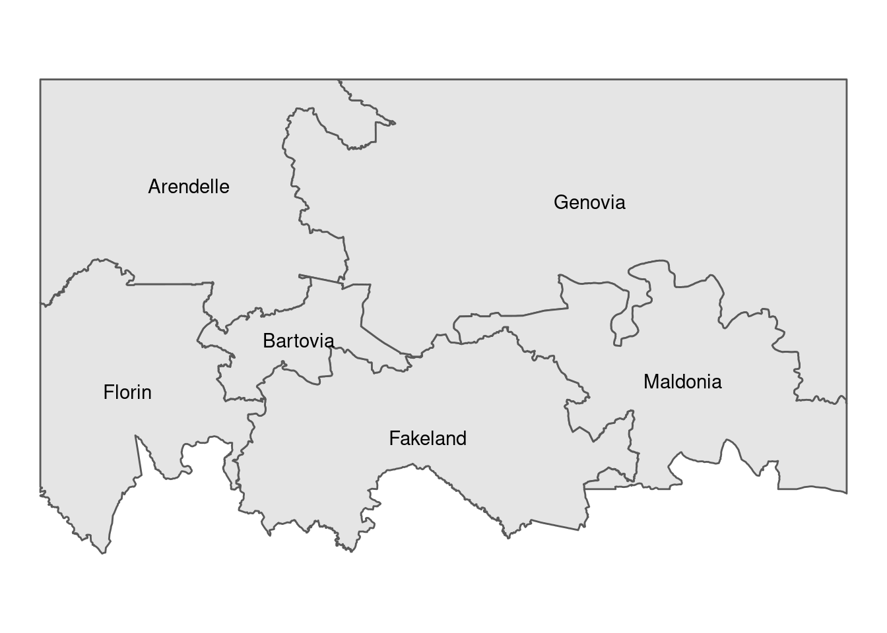
So we can see that Fakeland is bordered by four countries – Florin,
Bartovia, Genovia and Maldonia – with a coast to the south. We probably
don’t want to show this entire region in our base-map. We can reduce
this to our desired buffer around Fakeland’s bounding box usingcoord_sf. Alternatively, we could crop the entire regional
shapefile to our desired spatial extent.
At the same time let’s finish maping our base-map. We’ll often want
scale panels and directional arrows on our plots – these are easy to
implement by using the ggspatial package.
if(!require(ggspatial)){
install.packages("ggspatial")
library(ggspatial)
}## Warning in library(package, lib.loc = lib.loc, character.only = TRUE,
## logical.return = TRUE, : there is no package called 'ggspatial'library(ggspatial)
ggplot(admin0_regional) +
geom_sf(fill = "antiquewhite") +
coord_sf(xlim= c(st_bbox(fakeland_annual)$xmin - .2, st_bbox(fakeland_annual)$xmax + .2),
ylim = c(st_bbox(fakeland_annual)$ymin - 1, st_bbox(fakeland_annual)$ymax + 1)) +
ggspatial::annotation_north_arrow(location = "bl",
which_north = "true",
style = north_arrow_fancy_orienteering) +
theme(axis.text.x = element_blank(),
axis.text.y = element_blank(),
axis.ticks = element_blank(),
panel.grid.major = element_line(color = "aliceblue"),
panel.background = element_rect(fill = "aliceblue"),
panel.border = element_rect(colour = "black", fill=NA, size=5))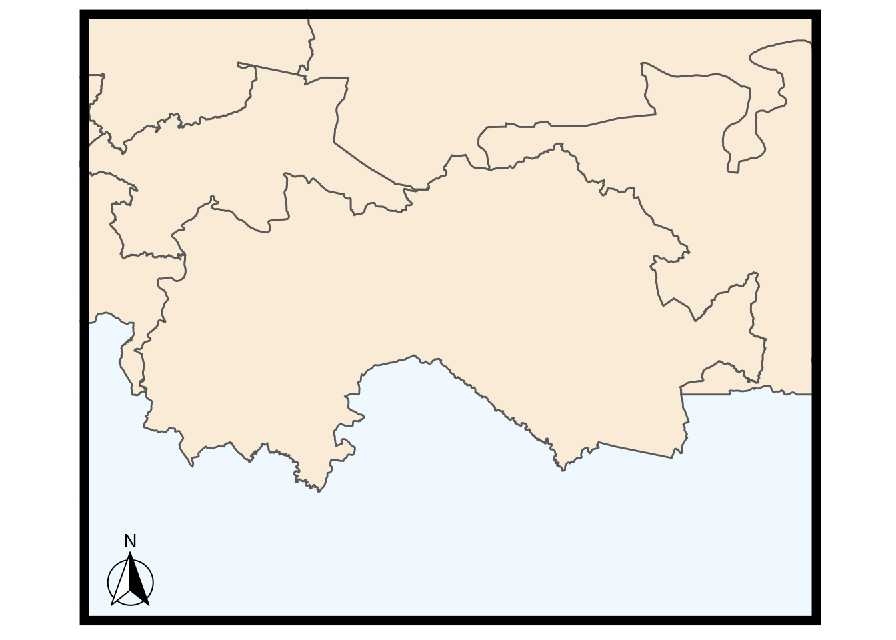
Finally, let’s pull this all together. We may wish to plot out a
number of metrics for Fakeland on this plot, so let’s save this basemap
as an R object we can call, without having to copy and paste all that
code. Note that we need to call coord_sf after our final
data layer.
basemap <- ggplot(admin0_regional) +
geom_sf(fill = "antiquewhite", colour = "grey80") +
ggspatial::annotation_north_arrow(location = "bl",
which_north = "true",
style = north_arrow_fancy_orienteering) +
theme(axis.text.x = element_blank(),
axis.text.y = element_blank(),
axis.ticks = element_blank(),
panel.grid.major = element_line(color = "aliceblue"),
panel.background = element_rect(fill = "aliceblue"),
panel.border = element_rect(colour = "grey50", fill=NA, size=5))Demo
basemap +
geom_sf(data = fakeland_annual, aes(fill = API), colour = "grey50", size = 0.2) +
scico::scale_fill_scico(palette = "batlow", trans = "log", breaks = my_breaks) +
labs(title = "API, Fakeland 20XX", fill = "API ",
shape = "Health Facility") +
coord_sf(xlim= c(st_bbox(fakeland_annual)$xmin - .2, st_bbox(fakeland_annual)$xmax + .2),
ylim = c(st_bbox(fakeland_annual)$ymin - 1, st_bbox(fakeland_annual)$ymax + 1)) +
theme(plot.title = element_text(face = "bold", hjust = 0.5),
legend.position = "right", legend.key.width = unit(0.5,"cm"),
legend.key.height = unit(0.75,"cm"), legend.text=element_text(size=12)) 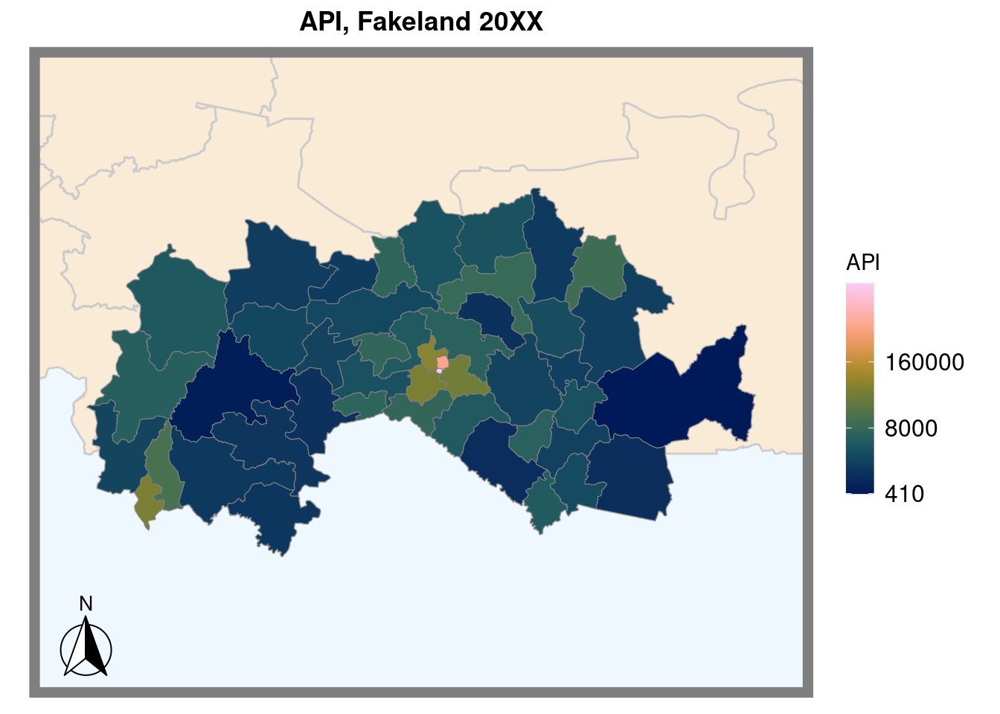